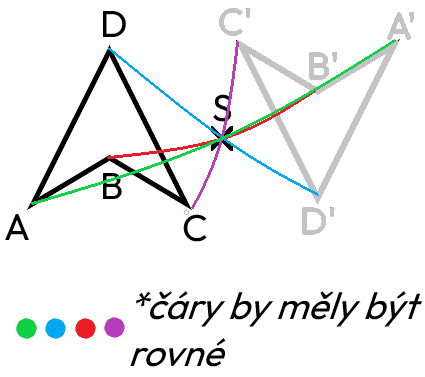

Středová souměrnost
Informace
- každý bod obrazce zobrazen přes bod S na druhou stranu, tak aby vzdálenost od osy zůstala stejná
- výsledkem je převrácený obraz původního tvaru
- střed souměrnosti se zobrazí sám na sebe
- např. A → A' (bod A je vzor, bod A' je obraz bodu A)
přenesení všech bodů středovou souměrností
znázornění, jak se má rýsovat (není přesné)